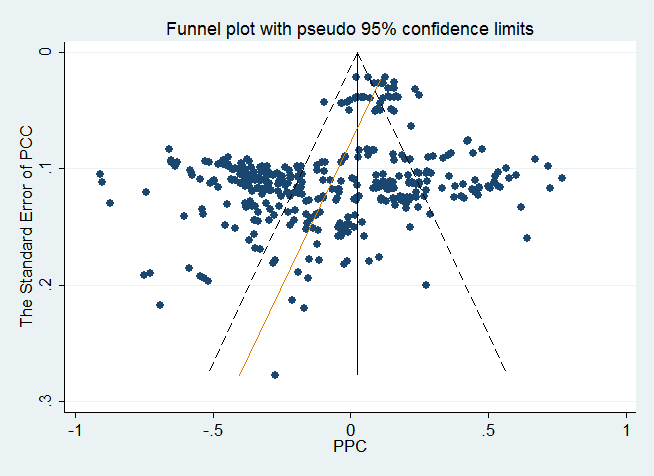

Abstract
An important question in development studies is how natural resources richness affects long-term economic growth. No consensus answer, however, has yet emerged, with approximately 40% of empirical papers finding a negative effect, 40% finding no effect, and 20% finding a positive effect. Does the literature taken together imply the existence of the so-called natural resource curse? In a quantitative survey of 605 estimates reported in 43 studies, we find that overall support for the resource curse hypothesis is weak when potential publication bias and method heterogeneity are taken into account. Our results also suggest that four aspects of study design are especially effective in explaining the differences in results across studies: 1) controlling for institutional quality, 2) controlling for the level of investment activity, 3) distinguishing between different types of natural resources, and 4) differentiating between resource dependence and abundance.
Fig: After correcting for publication bias, there is little evidence for the so-called natural resource curse.
Reference: Tomas Havranek, Roman Horvath, and Ayaz Zeylanov (2016), "Natural Resources and Economic Growth: A Meta-Analysis." World Development 88, 134-151.